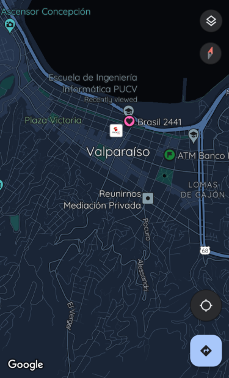

<app-header [title]="'Mapa'"></app-header>

<ion-content [fullscreen]="true">
  <div class="center-content">
    <!-- Primera imagen -->
    <div class="map-container">
      
      
      

      <div class="toggle-container" *ngIf="isSuscribed">
        <ion-toggle (ionChange)="toggleChanged($event)">Mostrar Buses</ion-toggle>
      </div>
    </div>
  </div>
</ion-content>